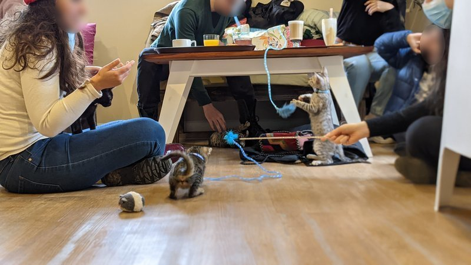
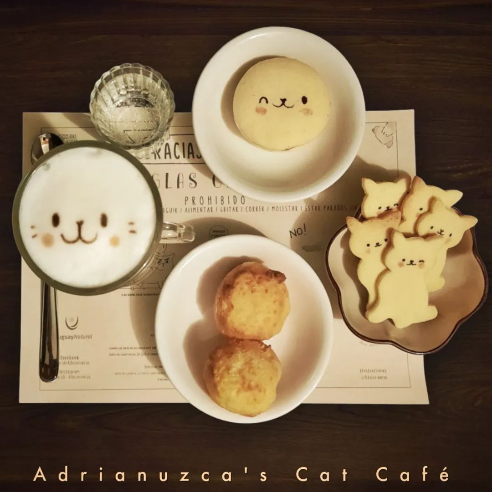

Cat Café Uruguay
Un Cat Café es una cafetería que tiene la particularidad de contar con gatos rescatados o de
orígenes diversos con los cuales disfrutar la estadía, un concepto ampliamente difundido en el
mundo.

Telizzia Cat Café es un emprendimiento gastronómico en Montevideo, inaugurado en plena pandemia con
el riesgo y esfuerzo adicional que ello implicó. Telizzia es miembro del programa Sembrando. Nuestro
Cat Café ha sido un escape para personas que sufren de depresión y ansiedad, donde especialmente se
ha agudizado su situación por la pandemia, ya que la cafetería supone un espacio de socialización y
contención emocional ayudando en términos de salud mental con los animales. Nuestros gatos pueden
ser tomados en adopción, teniendo sobre todo un fin social y filantrópico detrás del emprendimiento,
ayudando a darle un hogar a animales desamparados y ayudando a rescatistas y organizaciones
animalistas en el camino. Debido a que no se permiten locales Pet Friendly, la IM nos obligó a
retirar los gatitos y corre riesgo inminente de pérdida de trabajo de 8 chicas y 2 chicos. Desde
julio de 2021 están luchando sin éxito por cambiar esta normativa.
Visitar Telizzia Cat Café

Somos una cafetería que abrió a finales del 2017, siendo el primer Cat Café en ser abierto en
Uruguay.
Nuestro impulso fueron más de 10 años de transitar desde nuestro hogar, a poder hacerlo de forma más
numerosa y sustentable con sólo el servicio de cafetería.
Antes de abrir se redacto un manual, donde se marcaron las necesidades a cubrir de cada ingreso,
manejo del estress, atención veterinaria, sociabilidad, formulario y trabajo en la adopción
perfecta.
Nuestra premisa es rescatar e ingresar, mayormente gatos adultos en muy malas condiciones, los
cuales son los que tienen menos posibilidades de ser adoptados.
Nuestros huéspedes son siempre entre 20 y 30 gatitos, muchos de ellos no logran socializar en el
café, pero gracias a nuestra forma de adopción, tienen su oportunidad de brillar y lograr formar
parte de una familia.
Nuestro labor es una mezcla de ideología de respeto animal con un servicio de cafetería, del cual
nos apoyamos para costear estudios médicos, vacunas, castraciones, operaciones costosas y atención
veterinaria especializada.
Los esperamos en nuestro espacio Adrianuzca's Cat Café .
Visitar Adrianuzca's Cat Café